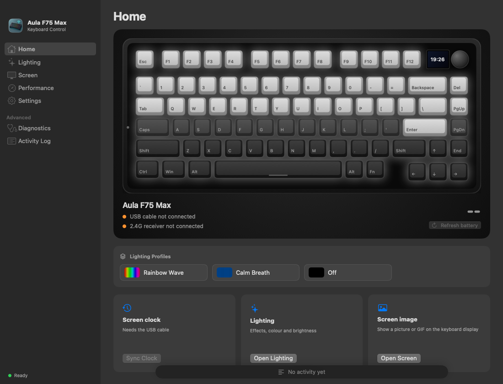
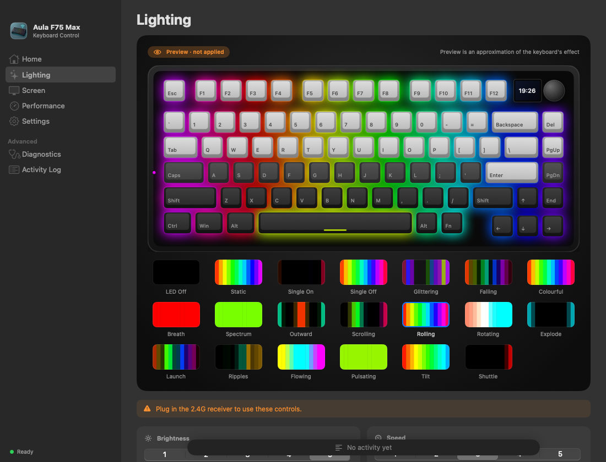

User guide
macOS
macOS 14+ · Apple Silicon
Choose the file ending in .dmg
Install and open
-
Download and open the DMG. Drag Aula F75 Max Driver into Applications, then open it.
-
If macOS blocks the app or offers to move it to the Bin, dismiss the warning. Open System Settings → Privacy & Security, find the blocked app and click Open Anyway. Confirm with your password or Touch ID, then click Open.

Apple’s example: click Open Anyway in Privacy & Security. Your app’s name will be different. Screenshot: Apple
Open using Terminal
For the app downloaded from this project’s official Releases, run these commands after moving it into Applications. This removes the quarantine attribute from this app only.
xattr -dr com.apple.quarantine "/Applications/Aula F75 Max Driver.app"
open "/Applications/Aula F75 Max Driver.app"Connect your keyboard
USB cable: connect the keyboard in wired mode to upload an image or GIF and sync its clock.
2.4G receiver: connect the receiver and switch the keyboard to 2.4G mode to adjust lighting and read the battery.
Open Home to check that your keyboard or receiver is connected.
Inside the app




If something is not working
Keyboard not detected?
Check the cable and connection mode. If access is blocked, open System Settings → Privacy & Security → Input Monitoring and allow Aula F75 Max Driver, then reopen the app. This permission is separate from allowing the first launch.
Include your operating system, app version, connection type and the step that did not work.